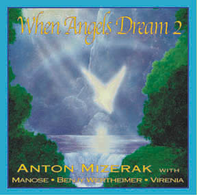

 |
When Angels Dream II More Music for Healing, Massage & Deep Relaxation | ||
|
Anton Mizerak: keyboards, harmonica and Tibetan bowls. Manose: bamboo flute Benjy Wertheimer: esraj Virenia Lind: angelic vocalizations Gary Cooper: guitar other voices: Anton, Natalie Gougeon, Cindi Titzer, Jennifer Spillette, Laura Berryhill |
|||
|
Available in CD only. |
|||
|
62 minutes of healing and deep relaxation music, mainly based on the classical Indian raga Sindhi Bhairavi. Healers and massage therapists love it. | |||
|
MP3 Downloads: Bhairavi Duet Anton Mizerak: keyboards & Tibetan bowls; Manose: bamboo flute; Benjy Wertheimer: esraj; Gary Cooper: guitar. Bhairavi Finale 1 Anton Mizerak: harmonica, keyboards & Tibetan bowls; Benjy Wertheimer: esraj. Bhairavi Finale 2 Anton Mizerak: keyboards & Tibetan bowls; Manose: bamboo flute; Benjy Wertheimer; Virenia: angelic vocalizations; esraj; Gary Cooper: guitar. Mountain Meadow Meditation Anton Mizerak: harmonica & keyboards; Manose: bamboo flute; Gary Cooper: guitar. Watch Ocean of Bilss | |||
|
Five years in the making, When Angels Dream II combines melodic flute, expansive esraj, angelic vocalizations with uplifting harmonica all played over a richly orchestrated bed of acoustic guitar, spacios synthesizers and ambient Tibetan bowls. Multi-instrumentalist Anton Mizerak is again joined by Nepali maestro flautist Manose and acoustic guitarist Gary Cooper. Benjy Wertheimer adds the esraj, a haunting bowed Indian stringed instrument. Virenia LInd (LA Opera Company) adds angelic vocalizations. "As I listen to When Angels Dream II my entire bieng shifts into an awareness of Angelic Realms which soothes and nurtures my soul. This then reminds me of thetrue nature of existance and a life free of struggle and distress. A must have CD for those seeking inner peace and higher consciousness. Laurel G LMT | |||